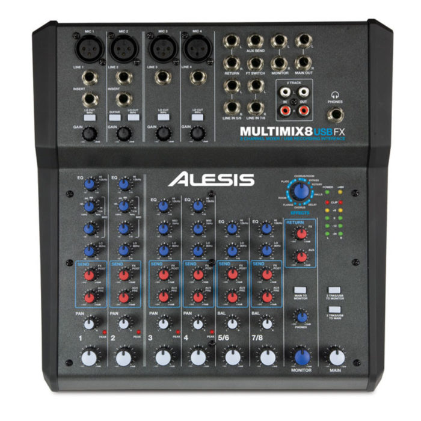

| # รายการสินค้า | ราคา | หมายเหตุ |
|---|---|---|
| 1  |
6,900 | มิกเซอร์ 8 แซนแนล พร้อมช่องต่อแบน Mic, Line และGuitar 16-bit,44.1/48kHz Stereo USB Outout สำหรับการบันทึกเสียง และเล่นเสียงผ่านคอมพิวเตอร์แบบง่ายๆ ช่องเสียบ XLR พร้อม Gain Trim High-Pass Filters และ 48V Phantom Power ใช้กับอุปกรณ์ IOS ได้ เช่น iPhone, iPad ผ่านตัวแปลง Lightning to USB Camera Adapter ได้ มีช่องเสียบ HI-Z สำหรับกีต้าร์ และเบส สามารถเลือกความถี่ในการ EQ เสียงกลางได้ มีเอฟเฟคคุณภาพในตัว จาก Alesis |
2  |
16,000 | VL Audio Vive 7150 ลำโพง Active ขนาด 15 นิ้ว 2ทาง ลำโพงมีแอมป์ในตัว กำลังวัตต์ 1400 วัตต์ ความดันสูงสุด 136db แบรนด์ของคนไทย โดยแบรนด์ VL Audio มีเทคโนโลยี FIR LINEAR PHASE ตู้ลำโพงแอคทีฟ VL audio Viva 715D แบรนด์คนไทย ขนาด 15 นิ้ว แบบ 2 ทางให้กำลังซับสูงสุด 1,400 วัตต์ ความดังสูงสุด T36dB มี DSP Processing สามารถเลือกใช้งานได่้ถึง 6 Preset มาพร้อมกับเทคโนโลยี FIR LINEAR PHASE อีกด้วย นับว่าเป็นตู้ลำโพงรุ่นใหม่ล่าสุด ประสิทธิภาพสูง จากยี่ห้อ VL-AUDIO |
3  |
36,700 | ชุดลำโพงพกพา ขนาด 10 นิ้ว ทวีตเตอร์ 1.35 นิ้ว มีเพาเวอร์มิกเซอร์ 8 ช่องในตัว กำลังขับ 2000 วัตต์ สามารถเชื่อมต่อ Bluetooth เพื่อเล่นสื่อจากสมาร์ทโฟนได้ โปรเซสเซอร์จาก Klark Teknik ในการประมวลผลเอฟเฟค (Echo Chorus Flanger Delayed Pitch ShiFter)มี ระบบกันไมค์หอนมาพร้อมไมค์ Behringer XM1800S 1 ตัว |
4  |
6,700 | Takstar GX6 ไมโครโฟน USB มี Audio Interface ความละเอียดที่ 16-bit/24-bit@44.1kHz-192kHz ปรับแพทเทิร์นรับเสียงได้ Takstar GX6 เป็นดิจิตอล USB ไมโครโฟน รุ่นใหม่ล่าสุด แม้ว่า Takstar จะเพิ่งเข้ามาทำตลาดในไทย แต่ก็เริ่มเป็นที่รู้จักเพราะคุณภาพของสินค้าและรีวิวมากมาย บวกกับอยู่ในเรทราคาที่ไม่สูงมาก ทำให้ตอบโจทย์กลุ่มผู้ใช้งานหลายกลุ่ม เช่น Youtubers, งานบันทึกเสียง, งานบรอดคาสต์ หรือแม้แต่สรีมมิ่งผ่านโซเชียล |